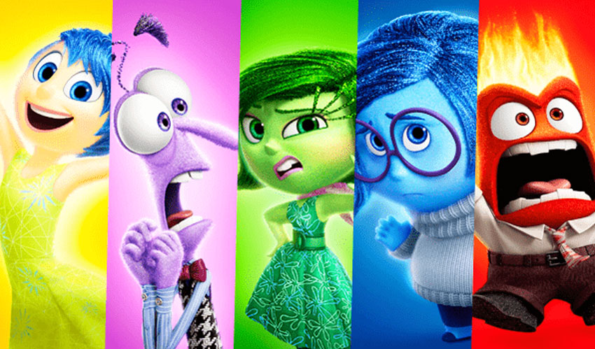
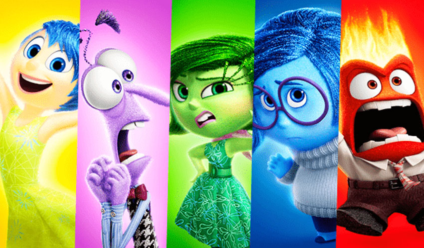

Divertidamente
Nota: 5/5

Divertidamente É um filme de desenho animado que personaliza os seguintes sentimentos:
- Raiva
- Tristeza
- Nojo
- Alegria
- Medo
Para conhecer mais Clique aqui


Divertidamente É um filme de desenho animado que personaliza os seguintes sentimentos:
Para conhecer mais Clique aqui
Grey's Anatomy É uma série que mostra o dia a dia de médicos. Mostrando a rotina de trabalho e pessoal. Famosa pelos desenrolos amorosos e morte dos personagens.
Para conhecer mais Clique aqui ainda não funciona!!
Extraordinário É uma história que tem como protagonista uma criança com deficiência física. Mostra o processo de adrendizagem dele e como que é a convivência das pessoas com ele na escola.
Para conhecer mais Clique aqui ainda não funciona!!
Mamilos-Podcast É um podcast de noticias apresentado pelas publicitárias Juliana Wallauer e Cris Bartis. Retratam sempre temas atuais.
Para conhecer mais Clique aqui ainda não funciona!!
Harry Potter a saga Harry Potter conta a história de um menino bruxo que fica órfão, depois que o vilão Voldemort assassina seus pais a sangue frio. O garoto se torna uma lenda no mundo mágico por ter sobrevivido ao feitiço mortal apenas com uma cicatriz na testa, mesmo sendo apenas um bebê.
Para conhecer mais Clique aqui ainda não funciona!!